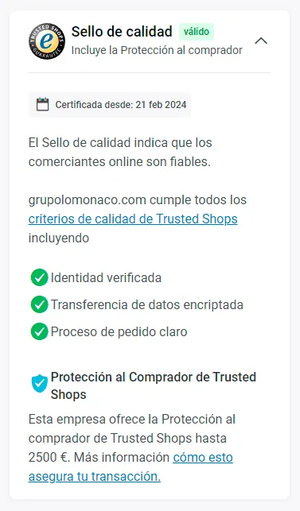
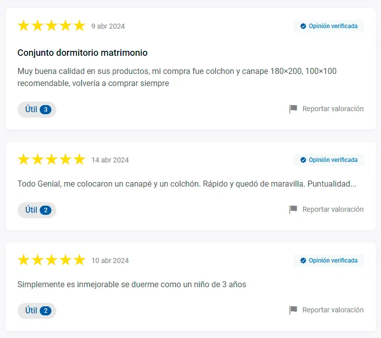
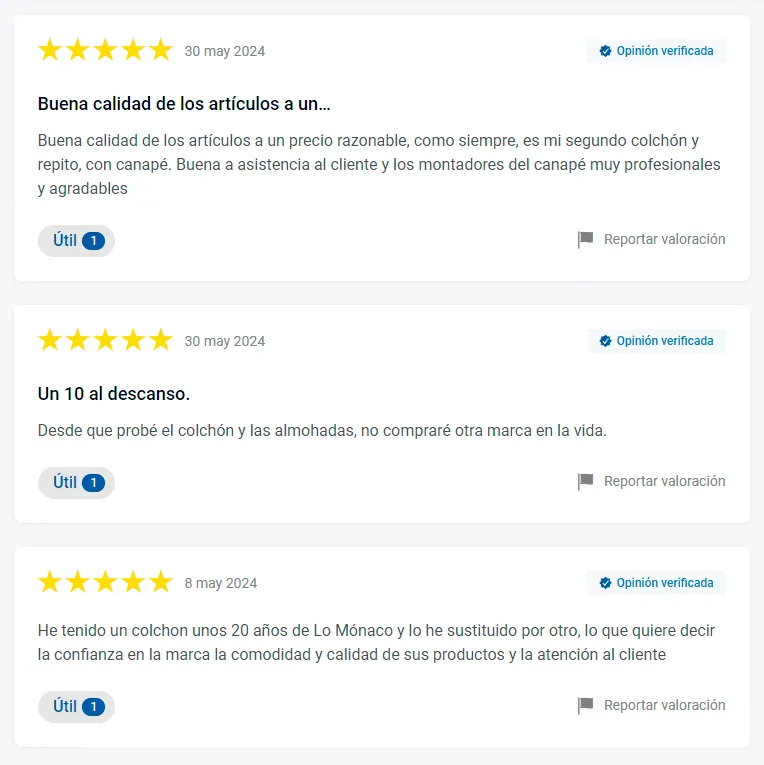

Atención al Cliente/Reclamaciones
¡Descansa tranquilo con LoMonaco y Trusted Shops!
¡Descansa tranquilo con LoMonaco y Trusted Shops!
¿Buscas un colchón de calidad que te ofrezca el mejor descanso? En LoMonaco, nos comprometemos a ofrecerte productos de la más alta calidad y un servicio excepcional. Pero no nos conformamos solo con nuestras palabras: miles de clientes ya han compartido sus experiencias positivas con nosotros.
En LoMonaco trabajamos para ofrecerte la mejor experiencia de compra posible, no solo en cuanto a la calidad de nuestros productos de descanso, sino también en lo que respecta a la seguridad y la confianza. Por eso, estamos orgullosos de ser una de las pocas tiendas online de colchones en España que cuenta con el sello de calidad de Trusted Shops, además de ofrecer a nuestros clientes la protección al comprador y las opiniones verificadas.
¿Qué es Trusted Shops?
Trusted Shops es una empresa líder en Europa en la certificación de tiendas online. Su sello de calidad es reconocido por millones de consumidores como un símbolo de confianza y seguridad. Para obtenerlo, las tiendas deben cumplir con estrictos criterios de calidad en áreas como la protección del cliente, la entrega y el servicio postventa.

¿Qué ventajas ofrece el sello de calidad de Trusted Shops a los clientes de LoMonaco?
– Protección al comprador: En caso de que tengas algún problema con tu compra, Trusted Shops te ofrece una protección de hasta 2.500€ para que puedas recuperar tu dinero.
– Evaluación constante: Trusted Shops evalúa continuamente a las tiendas online que cuentan con su sello de calidad. Esto significa que puedes estar seguro de que LoMonaco cumple siempre con los más altos estándares de calidad y seguridad.
– Opiniones verificadas: Sólo los clientes que han realizado una compra real en nuestra tienda pueden dejar una opinión. Esto garantiza que las opiniones que lees son auténticas y fiables.
Aquí puedes ver algunas de las opiniones verificadas de nuestros clientes, tanto nuevos como de aquellos que llevan años confiando en LoMonaco para su descanso:




¿Cómo funciona la protección al comprador de Trusted Shops?
Para beneficiarte de la protección al comprador de Trusted Shops, solo tienes que comprar en nuestra tienda online y seleccionar un método de pago seguro. En caso de que tengas algún problema con tu compra, como un producto defectuoso o una entrega que no se ha realizado, puedes presentar una reclamación a Trusted Shops. La empresa investigará tu caso y, si lo considera justificado, te reembolsará el importe de tu compra hasta un máximo de 2.500€.
En LoMonaco, queremos que te sientas seguro al comprar en nuestra tienda online. ¡No esperes más para mejorar tu descanso! Con LoMonaco, tienes la garantía de calidad, confianza y satisfacción.
¡Disfruta de un descanso tranquilo con LoMonaco!